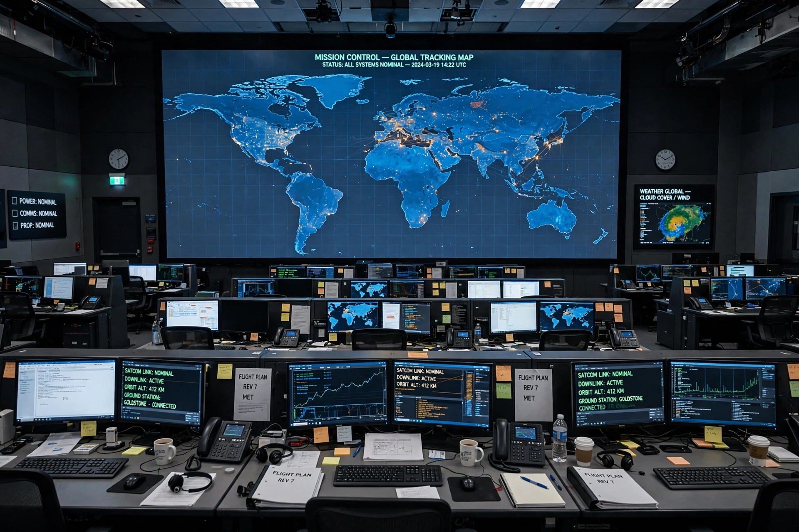

Johnson Space Center
From Wikipedia, the free encyclopedia
| Johnson Space Center | |
|---|---|
| Location | Houston, Texas |
| Agency | NASA |
| Established | 1961 (as Manned Spacecraft Center) |
| Role | Human spaceflight: Mission Control, astronaut corps |

Mission Control, Houston.The Lyndon B. Johnson Space Center (JSC) is NASA's centre for human spaceflight, home to the astronaut corps, the Christopher C. Kraft Jr. Mission Control Center — "Houston" of "Houston, we've had a problem" — and the training and engineering organisations behind every American crewed programme since Gemini. Established in 1961 on land donated through Rice University near Clear Lake, it was renamed for President Johnson in 1973.
From JSC, flight controllers ran Gemini, Apollo, Shuttle and now ISS and Artemis missions; its Neutral Buoyancy Laboratory's giant pool trains spacewalkers, and Building 31 preserves the Lunar Receiving Laboratory heritage and the room where Apollo samples returned.
Mission Control
The historic Mission Operations Control Room 2 — from which Apollo 11's landing and Apollo 13's rescue were directed — was restored to its 1969 appearance for the 50th anniversary and is now a museum piece beneath the working control rooms. 'Houston' remains the call sign of crewed flight: every Crew Dragon and Orion crew speaks first to JSC.
See also
Kennedy Space Center · Marshall Space Flight Center · Apollo 13 · NASA